-
 Saga · 14 films
Les voyages extraordinaires
Saga · 14 films
Les voyages extraordinaires
Saga. Un road-movie à hauteur de molécule : le circuit frigorifique, puis d'autres fluides et d'autres machines.
-
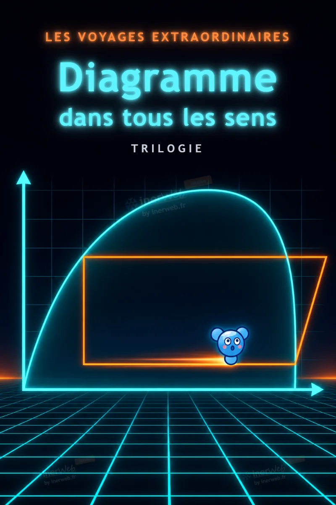
Trilogie Diagramme dans tous les sensTrilogie. La molécule entre dans le diagramme enthalpique : le lire, connaître chaque courbe, puis le tracer depuis les relevés.
-
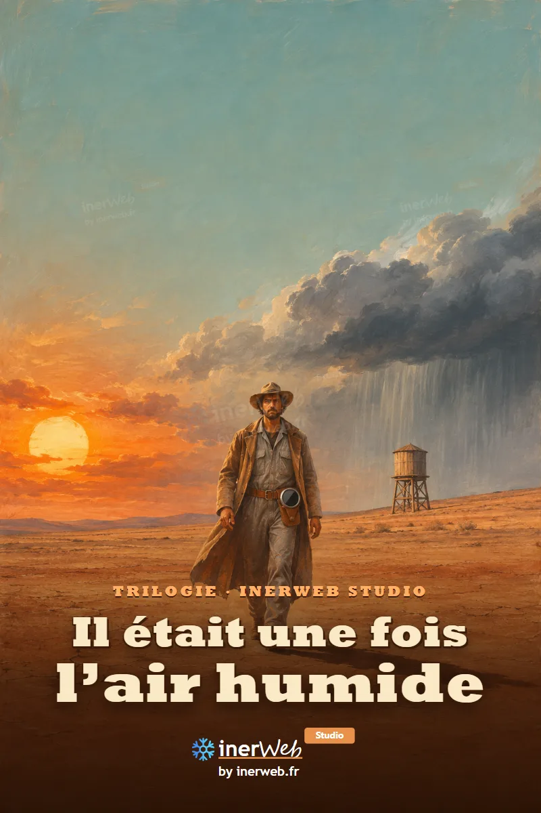
Trilogie · tome 1 Il était une fois l’air humideTrilogie. Le diagramme de l’air humide façon western : le lire, traiter l’air, puis faire le bilan d’une centrale. Tome 1 en ligne, tomes 2 et 3 bientôt.
-
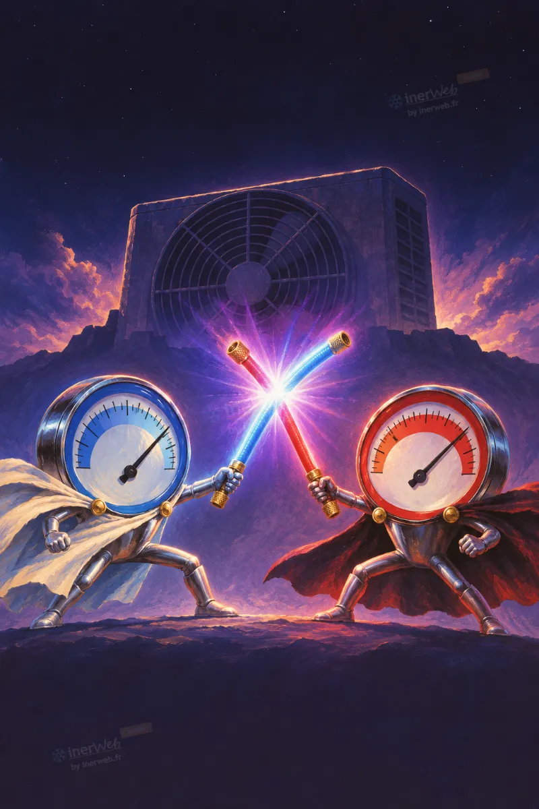
Série · 4 films La Guerre des manosSérie. Le mano BP bleu contre le mano HP rouge, façon science-fiction des années 1970 : pression relative et absolue, surchauffe, sous-refroidissement et incondensables.
-
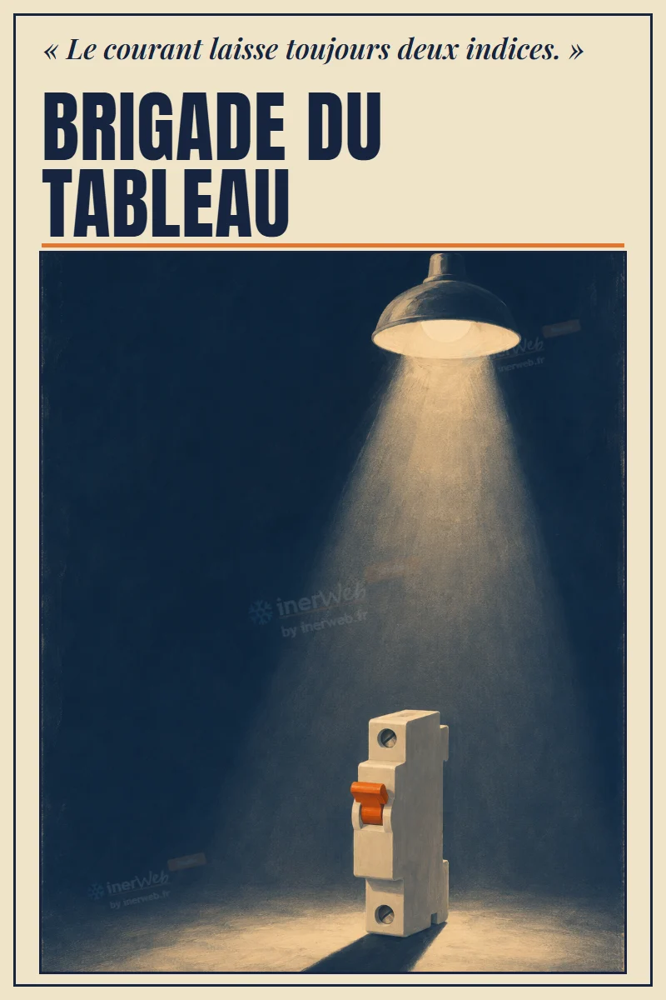
Série · 11 films Brigade du tableauSérie. Le courant laisse deux indices : il chauffe et il aimante. Le tableau électrique fait la brigade, façon film noir : de la loi d'Ohm aux fusibles.
-
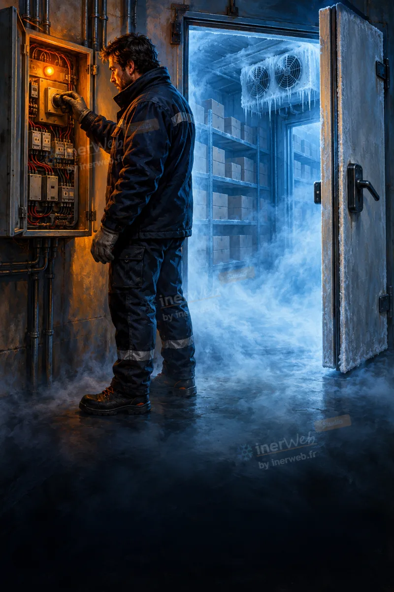
Série · saison 1 La régulationSérie. Onze épisodes courts dans la même chambre froide : à chaque fois un contact de plus, et le fluide obéit.
-
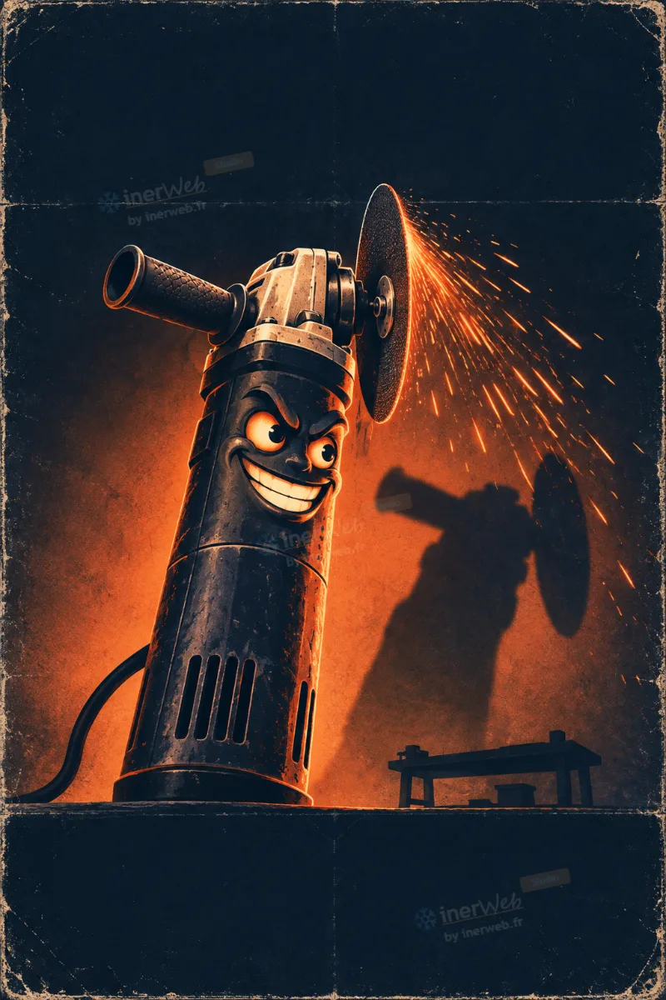
Mini-films · saison 1 Ça aurait pu mal finirMini-films. La sécurité à l'atelier façon film d'horreur, pour rire : la bêtise, l'outil qui râle, puis le bon geste.
-
Documentaire
Effet de serre, PRP et climat
Documentaire. Une minute pour comprendre pourquoi un kilo de fluide pèse des tonnes de CO₂.
-
Documentaire
Couche d'ozone et ODP
Documentaire. Un bouclier fin comme une feuille, une fuite qui monte, et le monde qui signe à Montréal.
-
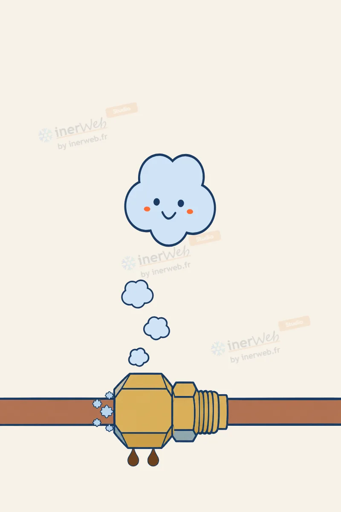
Documentaire Un kiloDocumentaire. Un petit nuage de fluide s'échappe d'un raccord. Il traverse l'effet de serre et la couche d'ozone, puis arrive au geste qui le garde dans le circuit.
-
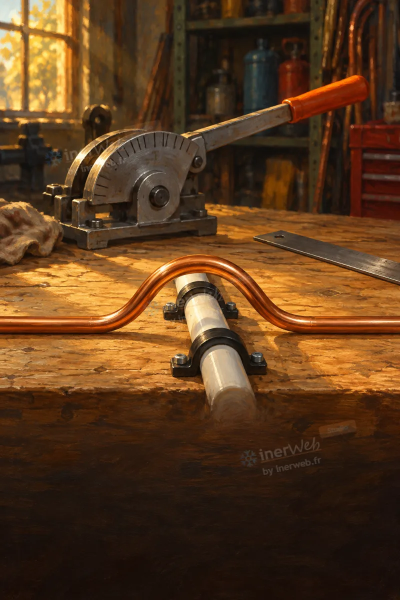
Le geste Le chapeau de gendarmeLe geste. Un tube de cuivre passe par-dessus un autre, d'un seul morceau : mesurer, tracer, cintrer, contrôler.
-
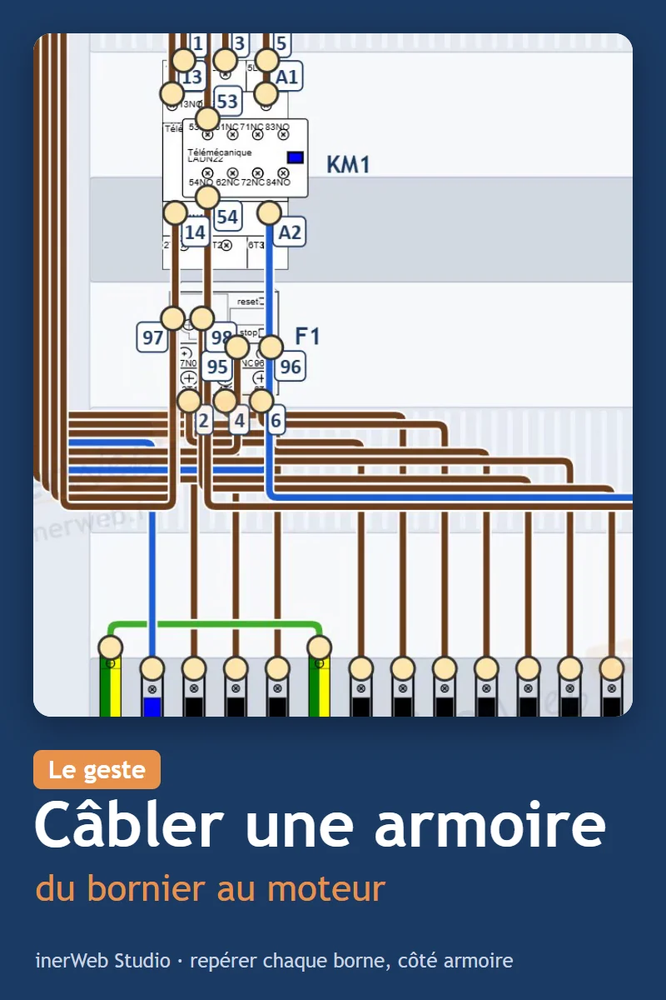
Le geste Câbler une armoireLe geste. Du bornier au moteur, chaque fil d'après ses repères : entrée impaire, sortie paire, puis l'appareil suivant.
Les voyages extraordinaires
Les voyages extraordinaires
- De quoi ça parle.
- Une molécule de fluide frigorigène quitte l'évaporateur, se fait comprimer, se condense, se détend, et revient à son point de départ pour recommencer. Le film ne montre rien d'autre que ce qui se passe vraiment dans le tube, et c'est sa force. Tome après tome, elle change de fluide (ammoniac, CO₂) puis de machine (compresseur à vis, centrale, booster, bi-étagé), et son chemin se dessine en même temps sur le diagramme enthalpique.
- Ce qu'on sait à la fin.
- Nommer les quatre organes du circuit, dire l'état du fluide à chaque endroit, et retrouver le même chemin sur le diagramme.
- À voir.
- Le tome 1 dès les premières semaines de CAP ; les tomes 2 à 10 en Bac Pro et BTS, chacun juste avant la station de sa machine.
Un road-movie à hauteur de molécule.
Tomes 1 à 3 — trois fluides Le même voyage, dans trois fluides différents. Chaque tome a son affiche, dans le dessin de la saga.
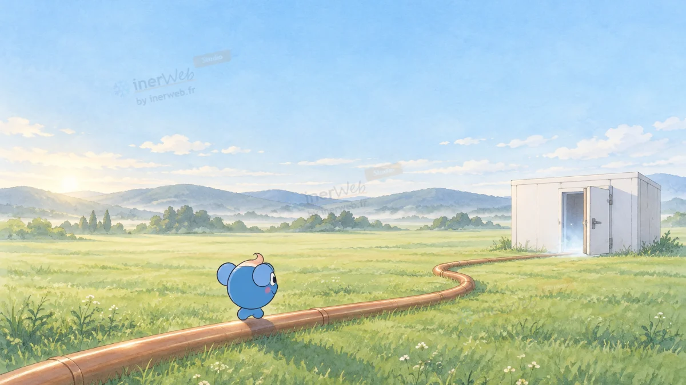
▶ voir9 min 01Tome 1
Le circuit de base
Une molécule fait le tour d'une chambre froide : évaporateur, compresseur, condenseur, détendeur, puis la fuite et la récupération. 13 épisodes.
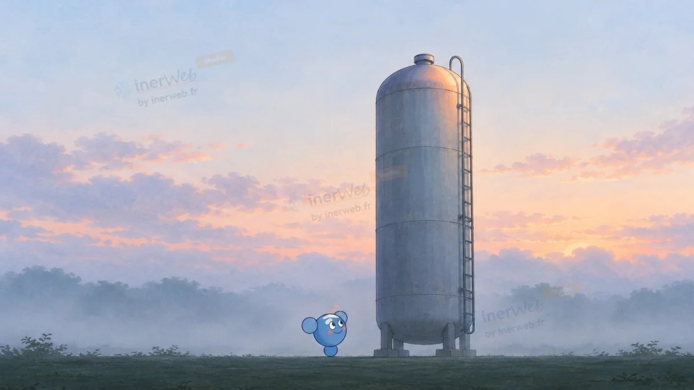
▶ voir9 min 51Tome 2
Édition NH₃
L'ammoniac dans une installation industrielle en régime noyé : bouteille séparatrice, compresseur ouvert, séparateur d'huile, condenseur évaporatif. Après le tome 1. 12 épisodes.
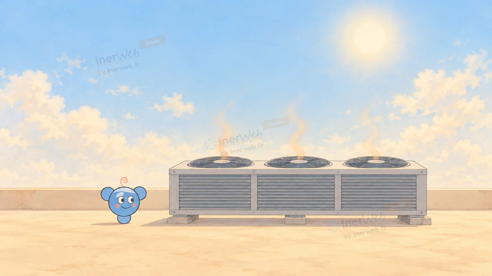
▶ voir9 min 36Tome 3
Édition CO₂
Le CO₂ transcritique d'un supermarché : le point critique, le refroidisseur de gaz, la bouteille intermédiaire, la neige carbonique. Après le tome 1. 13 épisodes.
Tomes 4 à 10 — les machines et les régulations La même molécule dans d'autres installations, avec le diagramme enthalpique qui avance en même temps.
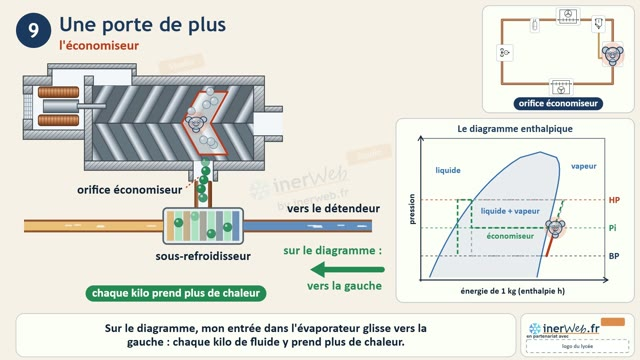
▶ voir9 min 05Tome 4
Le compresseur à vis
Les rotors, l'alvéole qui se ferme sans clapet, l'huile injectée, le tiroir, l'économiseur. Après le tome 1. 13 épisodes.
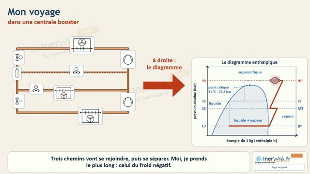
▶ voir10 min 36Tome 5
La centrale booster CO₂
Une seule centrale pour le froid positif et le froid négatif : les deux étages, et le cycle chiffré sur le diagramme. Après le tome 3. 13 épisodes.
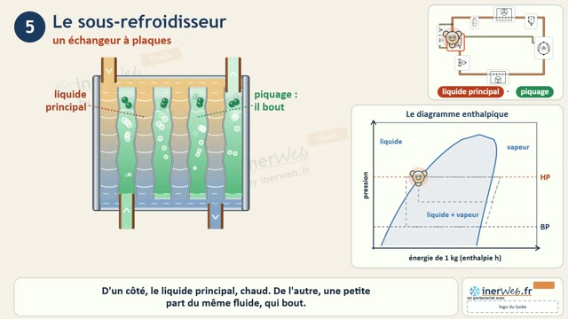
▶ voir9 min 48Tome 6
Le sous-refroidisseur de liquide
Deux tours dans l'échangeur : le liquide principal se refroidit, le piquage bout puis entre dans les vis par l'économiseur. Après le tome 4. 14 épisodes.
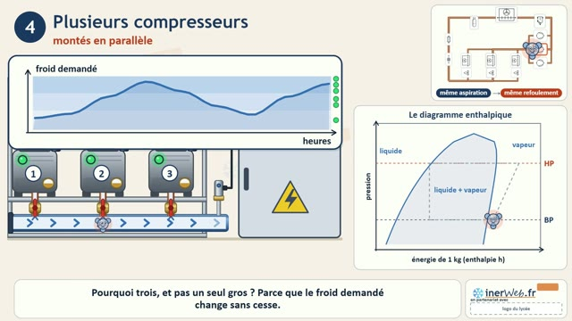
▶ voir10 min 09Tome 7
Les centrales frigorifiques
La centrale d'un supermarché : les meubles, les compresseurs en parallèle, la basse pression qui commande, le variateur. Après le tome 1. 13 épisodes.
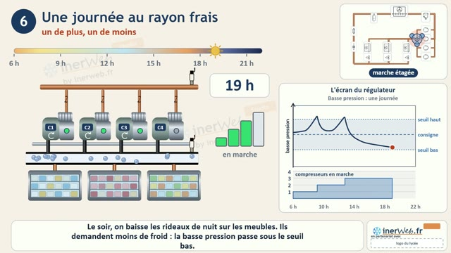
▶ voir11 min 29Tome 8
La régulation d'une centrale
Le cerveau d'une centrale à quatre compresseurs : zone neutre, temporisations, permutation, haute pression fixe ou flottante. Après le tome 7. 15 épisodes.
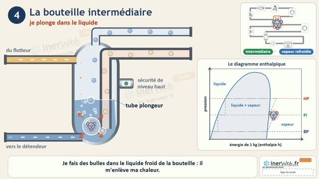
▶ voir9 min 19Tome 9
L'installation bi-étagée
L'ammoniac monte en deux étages pour faire très froid : deux compresseurs, la bouteille intermédiaire, la détente en deux fois. Après le tome 2. 13 épisodes.
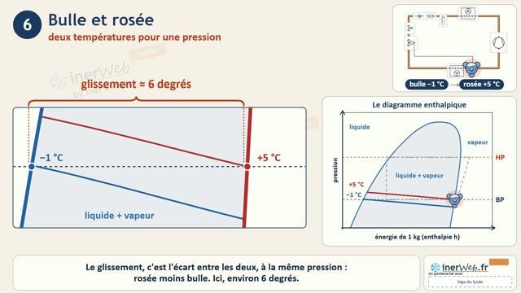
▶ voir10 min 56Tome 10
Le glissement
Trois molécules du R407C dans une climatisation : pourquoi un mélange bout en se réchauffant, la bulle et la rosée, la charge en liquide. Après le tome 1. 13 épisodes.
L'ennemi juré — l'eau et le fluide frigorigène Une nouvelle série du Voyage : deux ennemis qui travaillent ensemble, de part et d'autre d'une plaque.
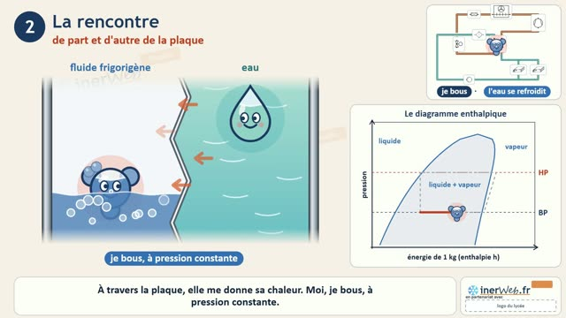
▶ voir6 min 37L'ennemi juré · tome 1
La frontière
Le groupe d'eau glacée : l'eau et le fluide se croisent dans l'évaporateur à plaques sans jamais se toucher ; la sentinelle, le gel, les armes du frigoriste. Après le tome 1 du Voyage. 10 épisodes.
Diagramme dans tous les sens, la trilogie Le diagramme enthalpique en trois films : on le lit, on suit chacune de ses courbes, puis on le trace à partir des manomètres et des températures.
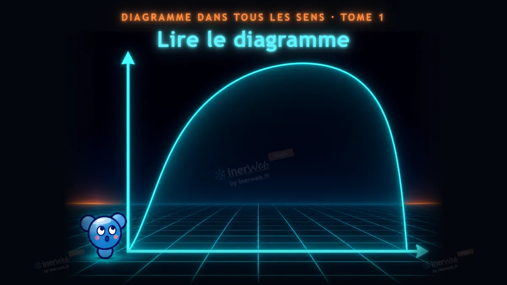
▶ voir6 min 05Trilogie · tome 1
Lire le diagramme
Une molécule de R32 fait le tour du circuit, et chaque organe trace son côté du cycle : les axes, la cloche, les quatre points, les écarts d'enthalpie, avec la croix du frigoriste à côté. Après le tome 1 du Voyage. 10 épisodes.
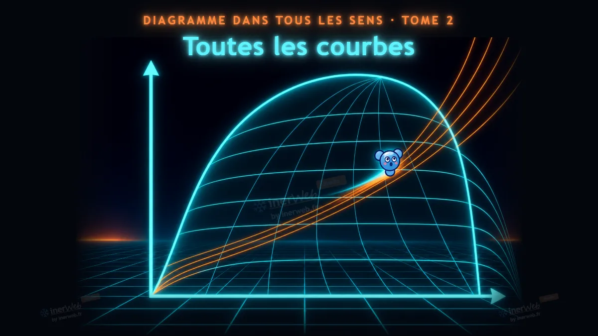
▶ voir9 min 05Trilogie · tome 2
Toutes les courbes
Une chambre froide au R134a : chaque famille de lignes du diagramme, ce qu'elle dit et ce qu'on en calcule, jusqu'au débit de fluide et aux puissances. Après le tome 1 de la trilogie. 14 épisodes.
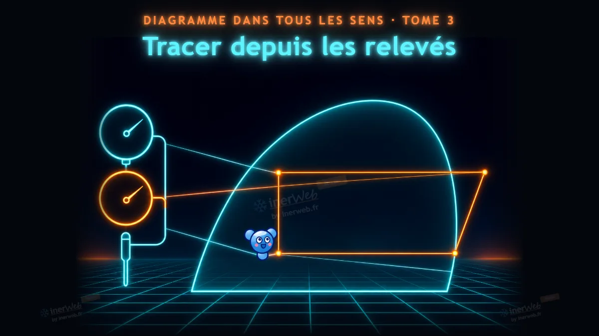
▶ voir6 min 07Trilogie · tome 3
Tracer depuis les relevés
À vous de faire : un climatiseur au R32, cinq relevés et un diagramme vierge. Le film donne la consigne, vous mettez en pause et vous tracez, puis il corrige, jusqu'au débit et aux puissances. Après le tome 2 de la trilogie. 9 épisodes.
Il était une fois l’air humide
- De quoi ça parle.
- Le diagramme de l’air humide, redessiné aux échelles de celui du banc de traitement d’air, à 1013 mbar. Une bouteille sortie du réfrigérateur se couvre de gouttes : pour comprendre d’où vient cette eau, on place l’air de la salle sur le diagramme et on lit ses grandeurs, à la règle et au crayon.
- Ce qu’on sait à la fin du tome 1.
- Placer un point avec deux grandeurs, puis lire la température sèche, l’humidité relative, l’humidité absolue, l’enthalpie, la température humide, le point de rosée et la masse volumique. Placer un point avec un psychromètre, températures sèche et humide.
- À voir.
- En Bac pro MFER et en TP TECVC, la feuille sur la table. Chaque consigne est dite et écrite ; mettez en pause pour tracer.
« Dans l’air de la salle, il y a neuf grammes d’eau. Encore faut-il savoir les lire. »
Les trois tomes Chaque tome a son affiche peinte, dans le style des westerns italiens des années 1960.
- ▶ voir5 min 08
Tome 1
Pour une poignée de grammes
Lire le diagramme de l’air humide : placer un point, puis lire ses sept grandeurs. Dix chapitres, de la bouteille embuée au psychromètre.
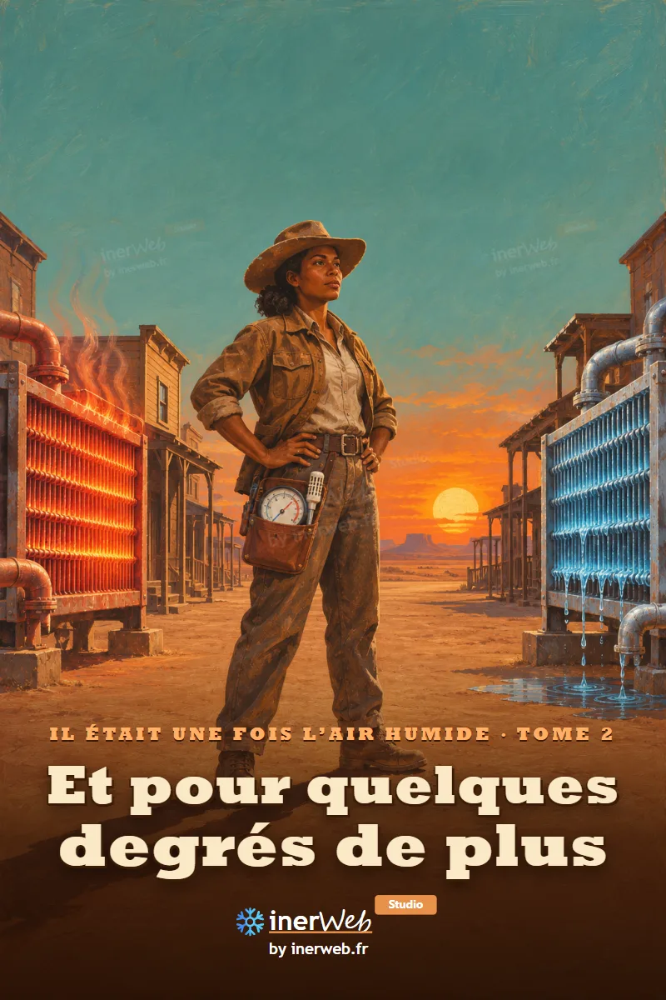
▶ voir4 min 51Tome 2
Et pour quelques degrés de plus
Les traitements de l’air : chauffer, refroidir avec ou sans condensation, humidifier, mélanger deux airs, et la part de chaleur sensible et latente.
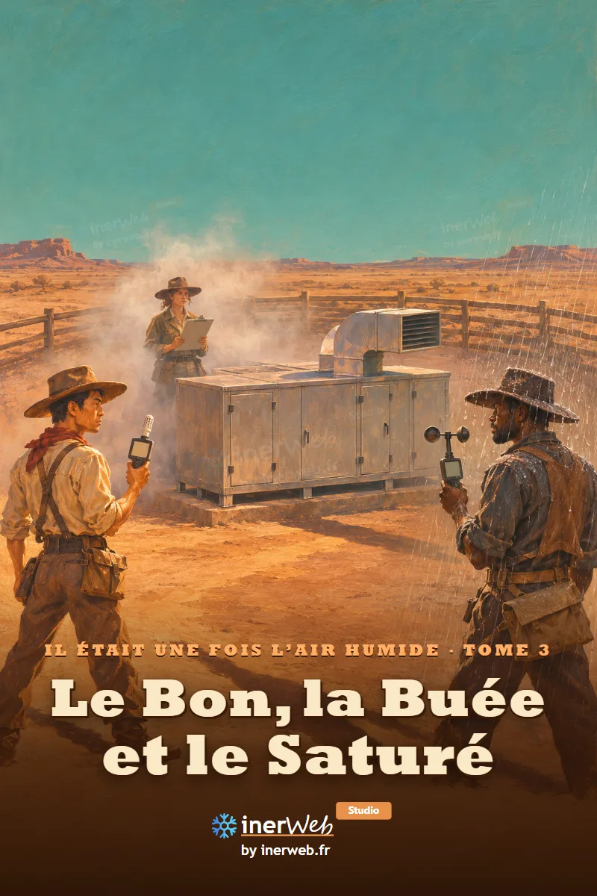
Bientôt disponibleTome 3
Le Bon, la Buée et le Saturé
Le bilan d’une centrale de traitement d’air à partir des relevés du banc : les points, les évolutions, les puissances et l’eau condensée.
La Guerre des manos
- De quoi ça parle.
- Les mesures de la mise en service, faites avec le manifold, un thermomètre à pince et la table pression-température du fluide. L'épisode I apprend à passer du manomètre à la table, en pression relative ou absolue. La surchauffe se mesure côté BP, le sous-refroidissement côté HP, et le test d'incondensables se fait machine à l'arrêt. L'épisode V montre pourquoi l'eau bout à froid sous vide, et comment le vacuomètre la trahit.
- Ce qu'on sait à la fin.
- Ajouter ou enlever le bar qui sépare le manomètre de la table, lire la température de saturation sur le manomètre ou dans la table, mesurer la température du tube au bon endroit, faire l'écart en kelvins et dire si la valeur est normale. Lire la tension de vapeur de l'eau dans sa table et dire, au vacuomètre, s'il reste de l'eau ou s'il y a une fuite.
- À voir.
- En CAP et en Bac Pro, avant les mesures sur la machine. Sur les affiches, BP et HP se battent ; sur le circuit, ils travaillent ensemble.
« Que la pression-température soit avec toi. »
Les cinq épisodes Chaque épisode a son affiche peinte, dans le style des films de science-fiction de la fin des années 1970.
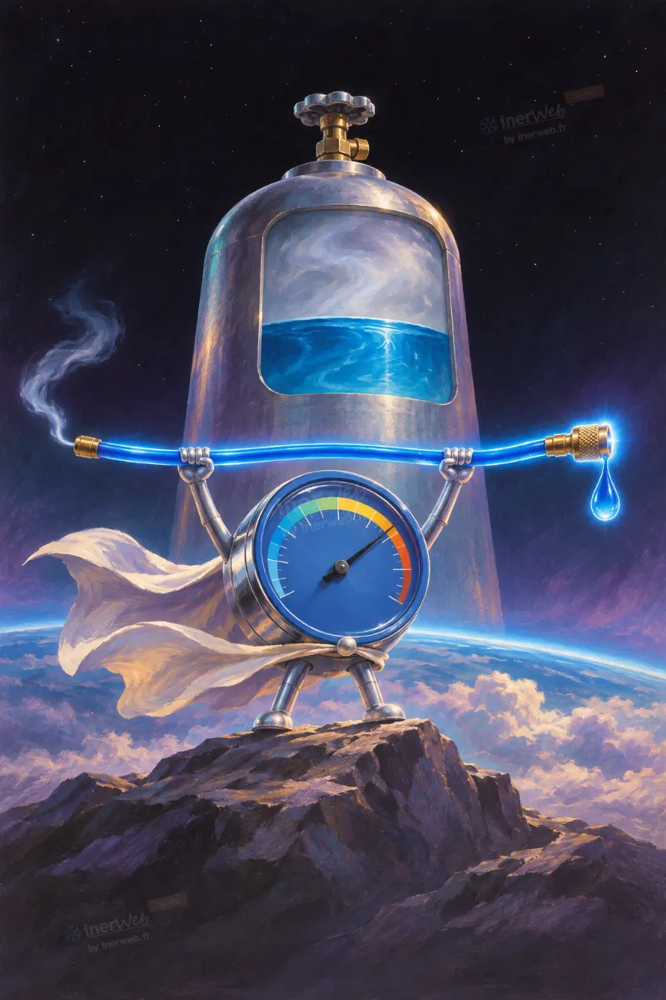
▶ voir2 min 30Épisode I
L'Équilibre de la pression
Pression relative, pression absolue : un bar sépare le manomètre de la table, dans un sens comme dans l'autre. Et à chaque pression, une seule température.
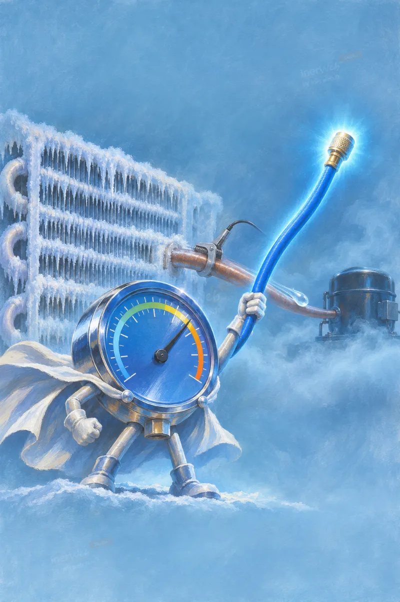
▶ voir4 min 51Épisode II
La Goutte fantôme
La surchauffe utile et totale : la vapeur qui sort de l'évaporateur ne doit plus porter une goutte de liquide.
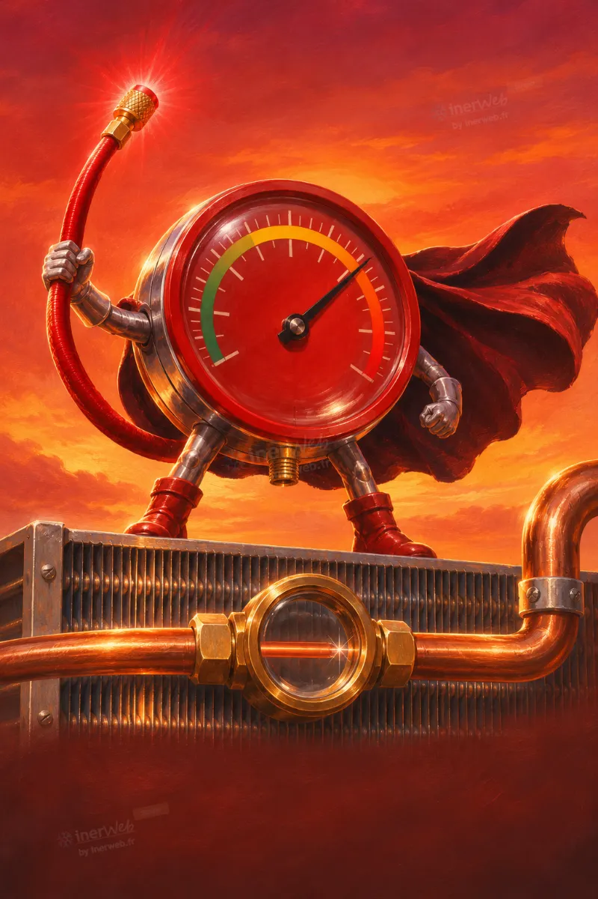
▶ voir4 min 53Épisode III
Les Derniers Degrés
Le sous-refroidissement au condenseur et total : le liquide qui arrive au détendeur ne doit plus porter une bulle de vapeur.
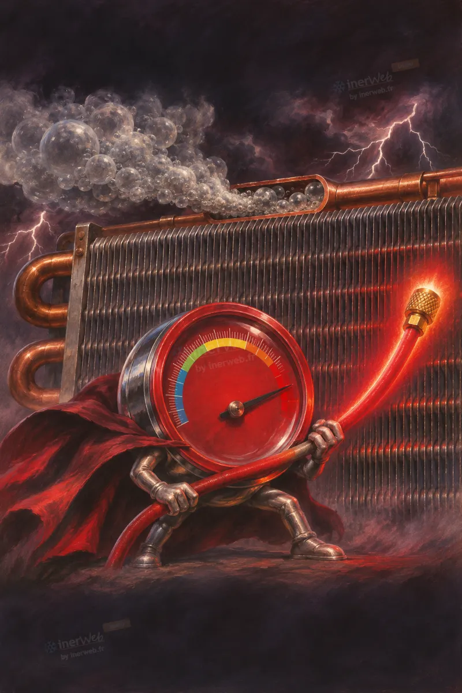
▶ voir3 min 41Épisode IV
L'Air contre-attaque
Les incondensables : de l'air dans le condenseur fait monter la pression HP au-dessus de ce que dit la table.
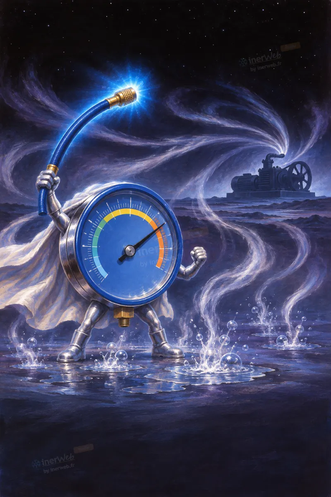
▶ voir4 min 24Épisode V
La Revanche du vide
L'eau qui bout à froid : sa tension de vapeur, lue dans la table de l'eau et au vacuomètre. Un vide qui se fige, c'est de l'eau ; un vide qui remonte sans fin, c'est une fuite.
Brigade du tableau
- De quoi ça parle.
- Une enquête à travers le tableau électrique. Le courant laisse deux indices : il chauffe et il aimante. Les quatre grandeurs de l'électricité d'abord, puis l'effet qui chauffe, l'effet qui aimante, et les appareils qui s'en servent : le contacteur exécute les ordres, les disjoncteurs et les fusibles protègent. Un film sur le risque pour le corps, traité avec sérieux, complète la série.
- Ce qu'on sait à la fin.
- Relier la tension, l'intensité, la résistance et la puissance. Expliquer pourquoi un fil chauffe et pourquoi une bobine attire. Dire ce que fait un contacteur, quel déclencheur répond à quel défaut, et ce qu'on lit sur un disjoncteur et sur un fusible.
- À voir.
- Dans toutes les formations, avant de travailler sur un circuit électrique. Ces films ne remplacent pas la formation à l'habilitation électrique.
« Le courant laisse toujours deux indices. »
Les huit films Chaque film a son affiche peinte, dans le style des affiches de film noir des années 1950.
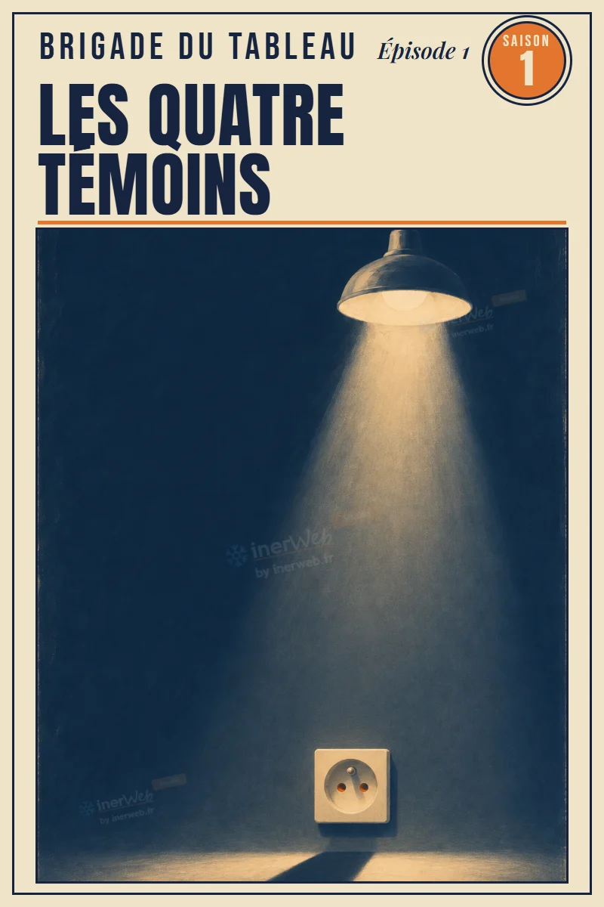
▶ voir3 min 49Épisode 1
Les quatre témoins
U, I, R, P. Quatre grandeurs mènent l'enquête : la tension qui pousse, l'intensité qui coule, la résistance qui freine, la puissance qui en résulte. Deux relations suffisent pour les relier.
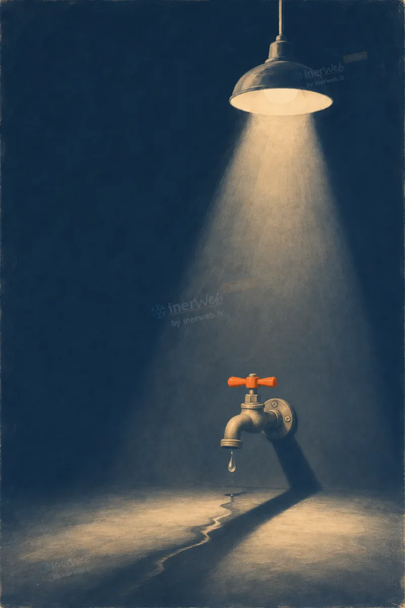
▶ voir3 min 53Hors série
La piste de l'eau
L'électricité comme l'eau. La hauteur de l'eau pour la tension, la quantité qui coule pour l'intensité, le robinet pour la résistance. Même les éclaboussures ont leur sens.
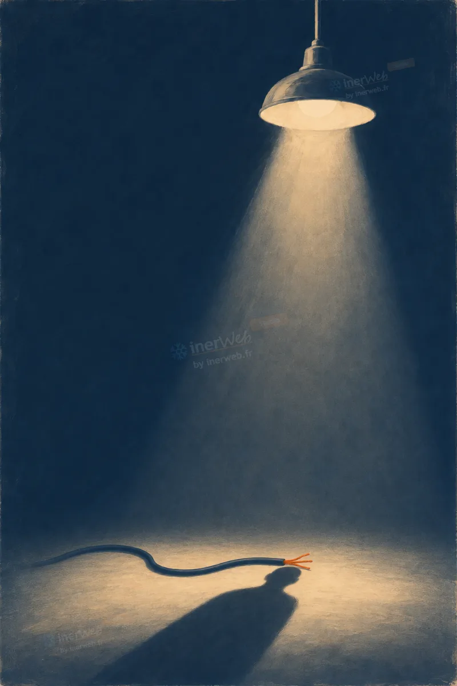
▶ voir3 min 53Hors série
Le circuit se referme sur vous
Quand la résistance, c'est vous. Le corps peut devenir une partie du circuit. Le film suit le courant qui le traverse et dit ce qui décide de la gravité. Un film à regarder avec sérieux.
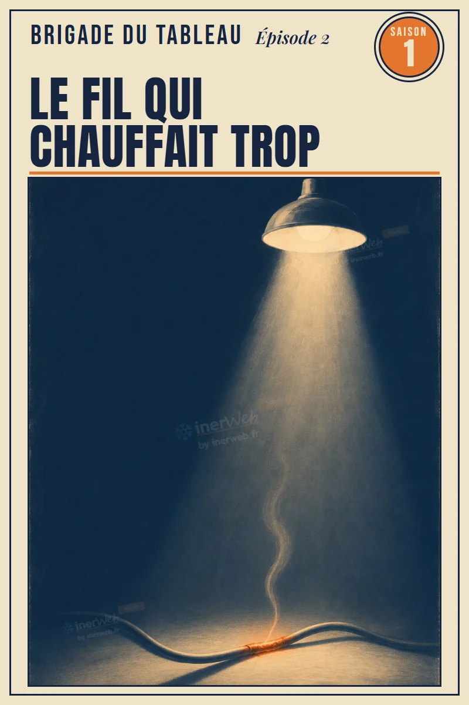
▶ voir3 min 47Épisode 2
Le fil qui chauffait trop
L'effet Joule. Tout conducteur chauffe quand il est traversé par un courant, et la chaleur grimpe vite avec l'intensité. Utile dans une résistance, dangereuse dans un câble trop fin ou une borne desserrée.
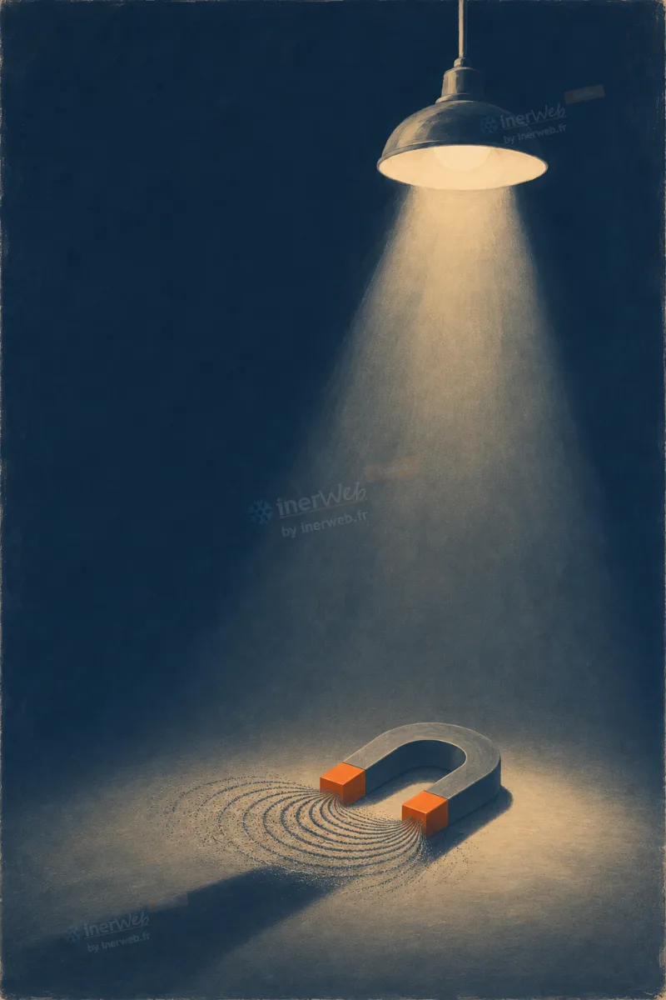
▶ voir3 min 25Épisode 3
Le complice invisible
Le magnétisme. Le courant a un second effet : il crée un champ magnétique, qu'on ne voit pas mais que la boussole et la limaille montrent. Enroulé en bobine, le fil l'amplifie.
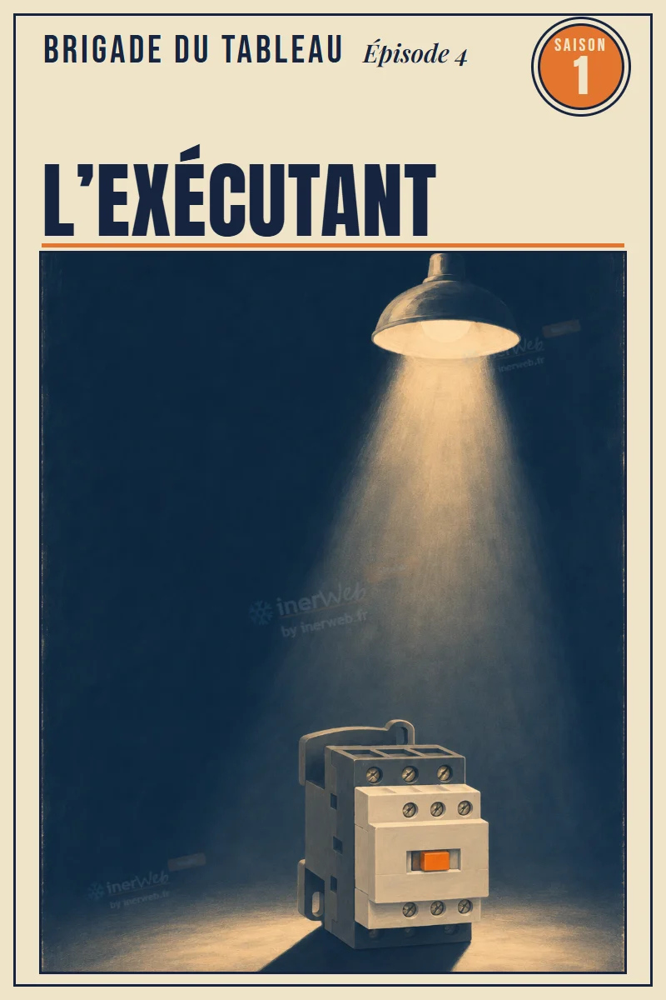
▶ voir3 min 50Épisode 4
L'exécutant
L'électro-aimant et le contacteur. Une bobine alimentée attire une pièce mobile et ferme les contacts, une bobine coupée les rouvre. Un petit courant de commande pilote ainsi un gros courant de puissance.
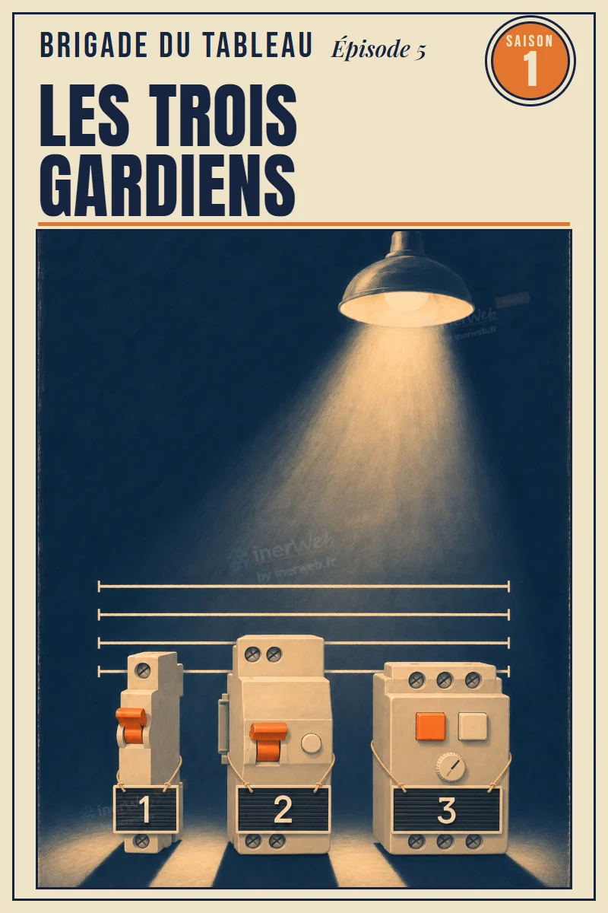
▶ voir3 min 46Épisode 5
Les trois gardiens
Les disjoncteurs. Surcharge, court-circuit, défaut d'isolement : à chaque défaut son déclencheur, thermique, magnétique ou différentiel. Le film apprend à lire la face avant d'un disjoncteur.
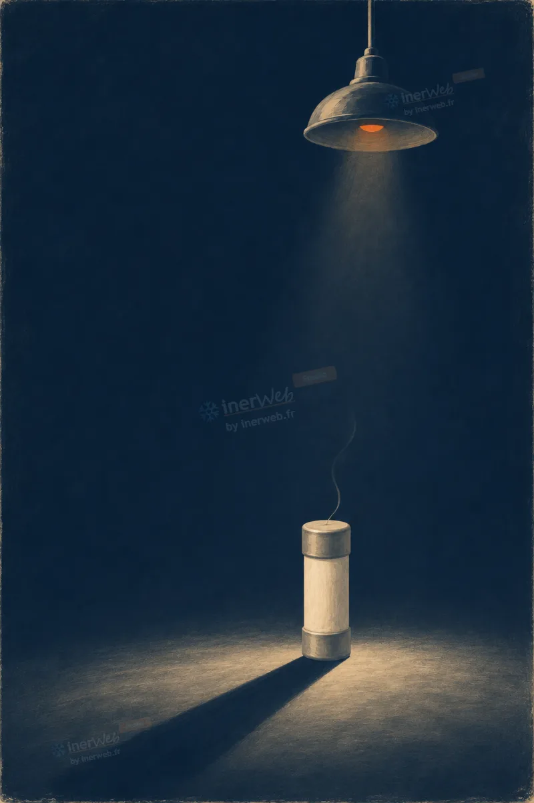
▶ voir3 min 42Épisode 6
Fondu au noir
Les fusibles. Un fil calibré qui fond quand le courant dépasse sa limite, et qui se remplace au lieu de se réarmer. La cartouche, son calibre, et la différence entre gG et aM.
Saison 2 Le tableau qui commande les moteurs : disjoncteur moteur, relais thermique, moteurs, symboles.
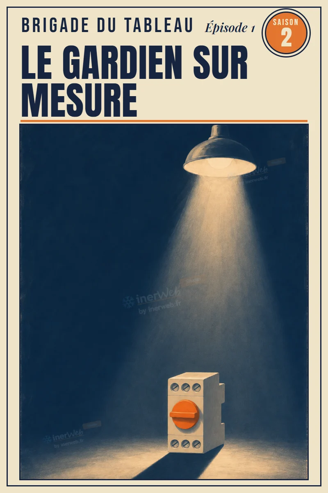
▶ voir3 min 44Saison 2 · Épisode 1
Le gardien sur mesure
Le disjoncteur moteur. Un seul appareil protège un moteur contre la surcharge et contre le court-circuit. Deux déclencheurs, et un réglage sur la plaque du moteur : le magnétique est calé haut, pour laisser démarrer le moteur.
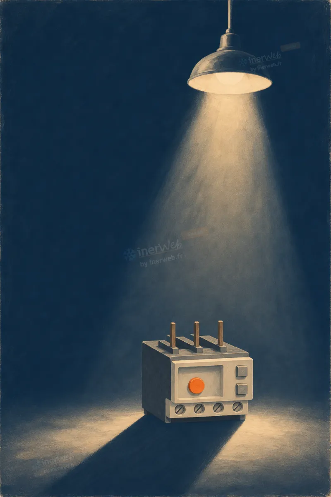
▶ voir3 min 38Saison 2 · Épisode 2
L’indicateur
Le relais thermique. Il surveille la surcharge d’un moteur, et pourtant il ne coupe rien : il ouvre un petit contact, et le contacteur retombe. Il ne voit que la surcharge, jamais le court-circuit.
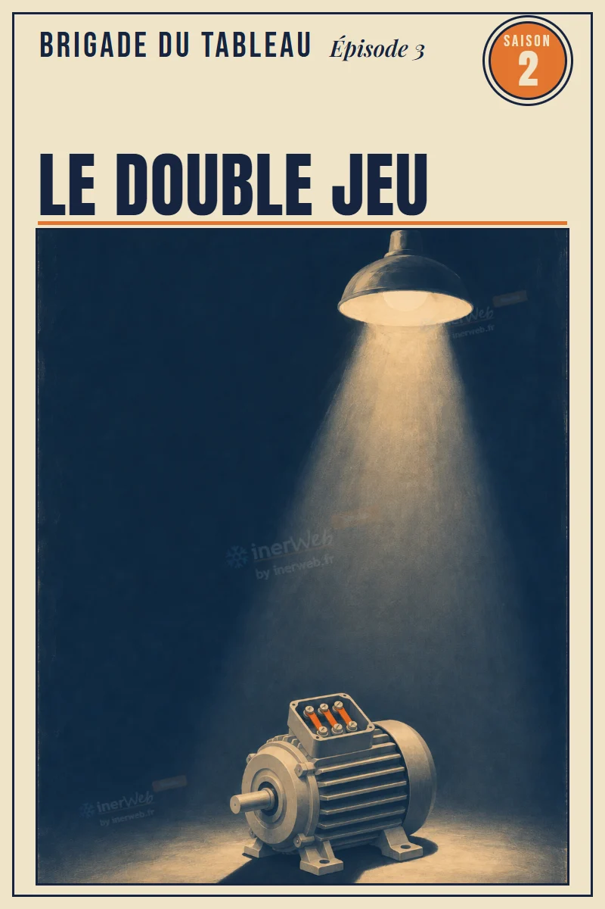
▶ voir3 min 50Saison 2 · Épisode 3
Le double jeu
Le moteur triphasé et son couplage. Trois bobinages, six bornes, deux couplages : l’étoile donne au bobinage la petite tension, le triangle la grande. Le couplage se lit sur la plaque, et se pose hors tension, après consignation.
La régulation — saison 1
- De quoi ça parle.
- Une chambre froide, son schéma électrique à gauche, son circuit frigorifique à droite. On regarde un contact se fermer et le fluide obéir : le thermostat, le pressostat, la vanne, l'horloge de dégivrage. La saison monte en difficulté : la commande directe d'abord, les pump-down ensuite, les dégivrages pour finir.
- Ce qu'on sait à la fin.
- Lire un schéma de commande de chambre froide et dire, contact par contact, ce que fait l'installation.
- À voir.
- En CAP 2e année et en Bac Pro, chaque épisode juste avant sa station, qui porte les planches pas à pas et les questions.
Toujours le même décor, et à chaque épisode un contact de plus.
Les onze épisodes Chaque épisode a son affiche : l'idée de la régulation, racontée avec humour par les organes eux-mêmes.
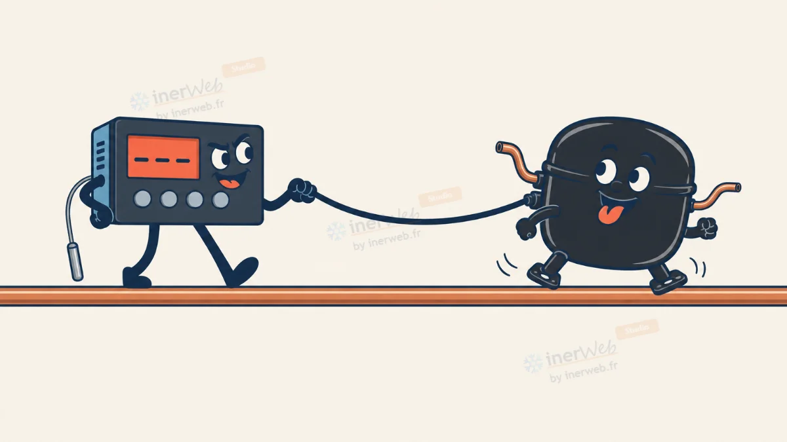
▶ voir1 min 38Épisode 1 · station 1
La commande directe
Le thermostat commande le compresseur directement : le contact se ferme, le froid part.
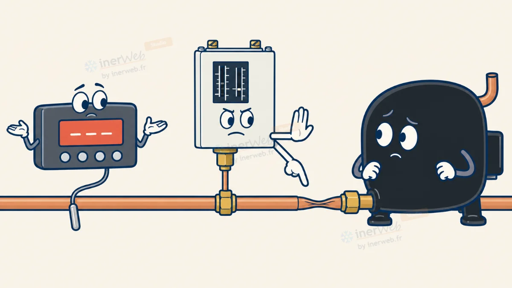
▶ voir1 min 38Épisode 2 · station 2
La protection minimum
Un pressostat basse pression en série protège le compresseur quand la pression tombe trop bas.
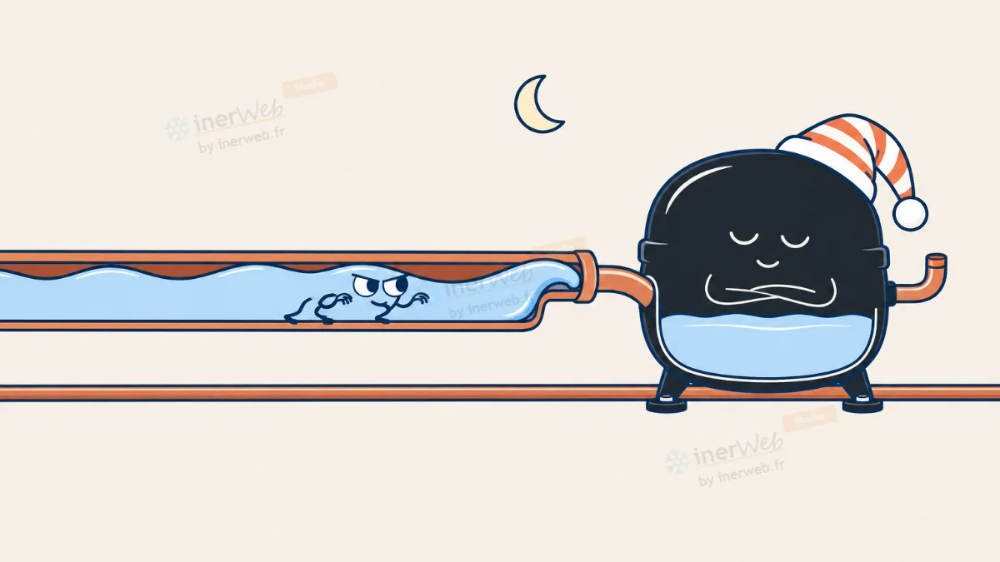
▶ voir59 sÉpisode 3 · station 2
La migration de liquide
À l'arrêt, le fluide migre vers le carter du compresseur ; au redémarrage, la casse guette.
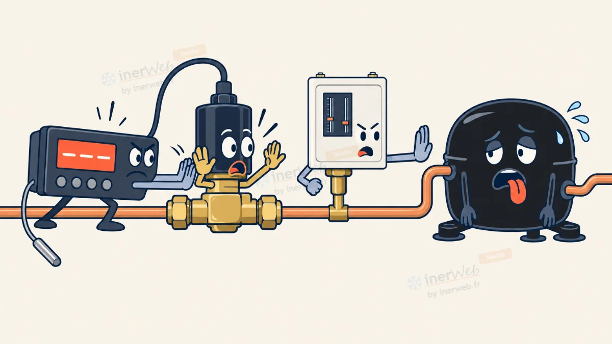
▶ voir1 min 47Épisode 4 · station 3
Le pump-down automatique
Le thermostat ferme la vanne, le compresseur vide l'évaporateur, le pressostat l'arrête.
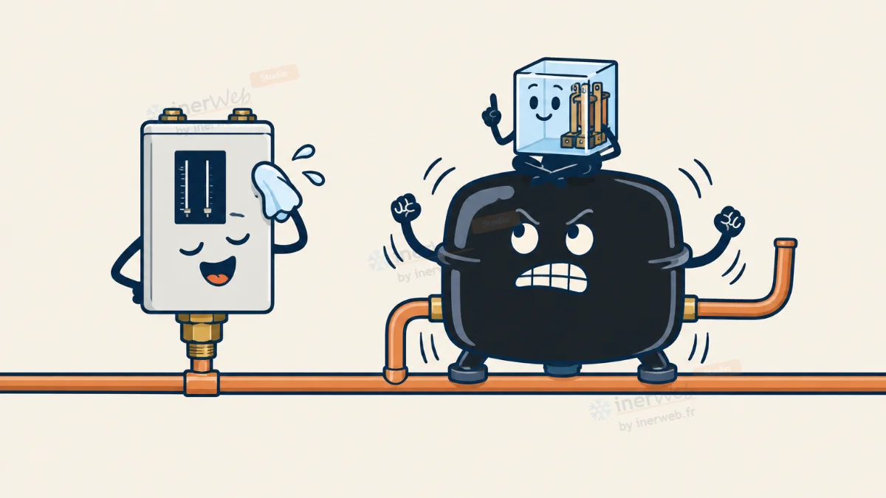
▶ voir1 min 44Épisode 5 · station 4
Le pump-down amélioré
Le même tirage au vide, sans les courts cycles du compresseur.
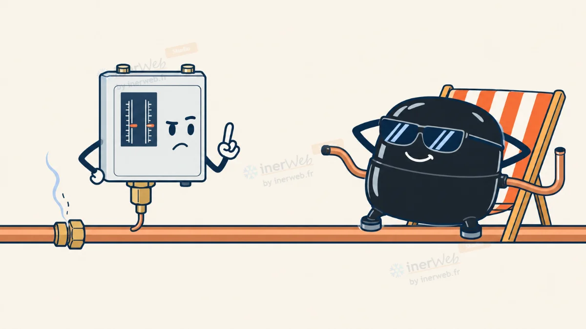
▶ voir1 min 46Épisode 6 · station 5
Le pump-down unique
Un seul tirage au vide à chaque arrêt, et ce que fait l'installation en cas de fuite.
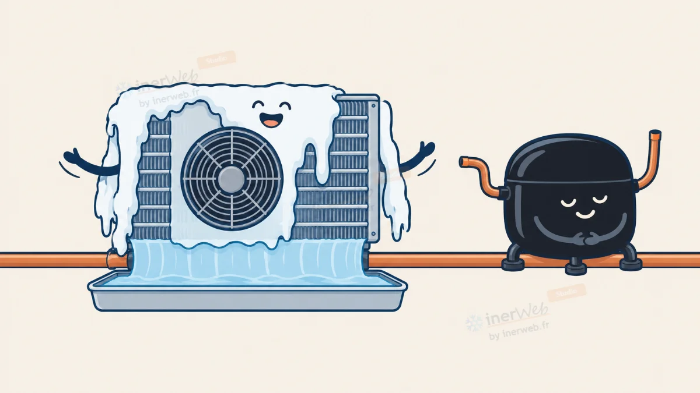
▶ voir1 min 29Épisode 7 · station 6
Sans dégivrage commandé
Une chambre froide positive où le givre fond tout seul à l'arrêt, et la limite de cette solution.
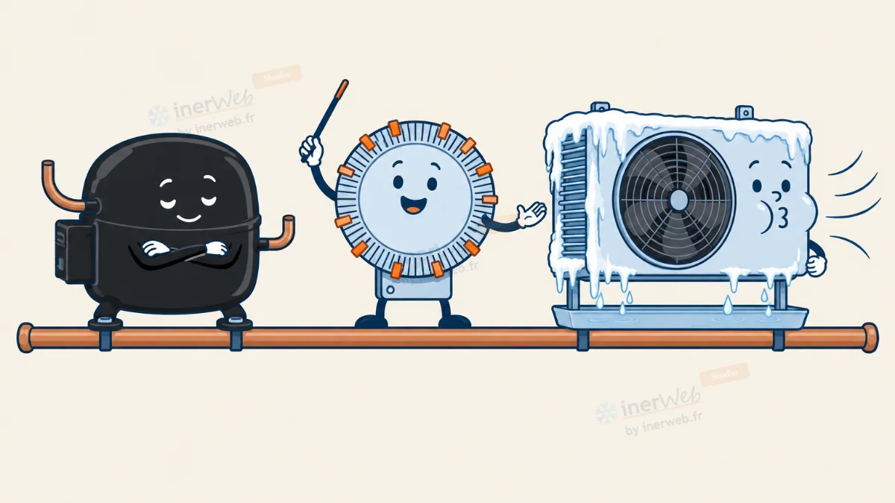
▶ voir1 min 35Épisode 8 · station 7
Le dégivrage naturel
Une horloge arrête le froid à heures fixes ; le givre fond à l'air de la chambre.
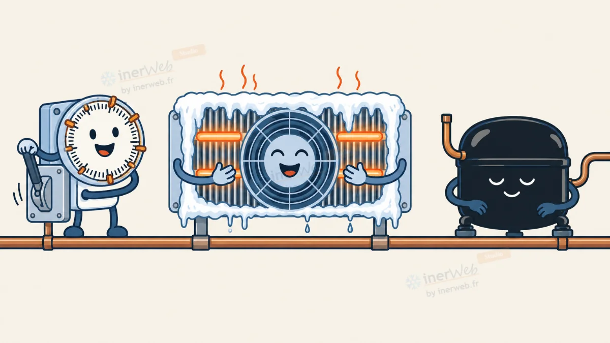
▶ voir1 min 47Épisode 9 · station 8
Le dégivrage électrique
L'horloge coupe le froid et allume les résistances ; puis la reprise du froid après la fonte.
- ▶ voir1 min 36
Épisode 10 · station 9
Le dégivrage par gaz chauds
Les gaz chauds du compresseur sont envoyés dans l'évaporateur pour faire fondre le givre.
- ▶ voir1 min 31
Épisode 11 · station 10
Le dégivrage par inversion de cycle
Une vanne quatre voies inverse le circuit : l'évaporateur devient condenseur le temps de la fonte.
Ça aurait pu mal finir — saison 1 « À l'atelier »
- De quoi ça parle.
- Dix situations de l'atelier : la tenue, les équipements de protection, la meuleuse, la perceuse, le port de charges, le chalumeau, la bouteille d'azote, le fluide frigorigène, le point chaud et la petite coupure. À chaque fois, l'objet qui risque gros prend la parole.
- Ce qu'on sait à la fin.
- Le bon geste de chaque situation, et sa règle en une phrase. Chaque règle s'appuie sur une source : INRS, code du travail, notices des fabricants.
- À voir.
- En CAP et en Bac Pro, en ouverture d'une séance d'atelier : un épisode, puis la règle au tableau.
Notre bonhomme fait la bêtise, l'outil râle, on rembobine, et il refait tout proprement.
Les dix épisodes Chaque épisode a son affiche : l'objet du jour, personnifié, qui en a vu d'autres.
- ▶ voir2 min 41
Épisode 1
L'atelier n'est pas une cour de récré
Tenue, allées libres, rien qui pend, et l'outil abîmé se signale.
- ▶ voir2 min 58
Épisode 2
Le défilé de mode du chantier
Le bon équipement de protection pour le bon risque.
- ▶ voir3 min 14
Épisode 3
Le carter, c'est pas décoratif
Meuleuse d'angle : carter, bon disque, deux mains, arrêt complet.
- ▶ voir2 min 47
Épisode 4
Le foret qui fait tourner le monde
Perceuse : pièce dans l'étau, foret serré, rien qui pend.
- ▶ voir2 min 34
Épisode 5
Le compresseur ne se soulève pas avec le dos
Un chariot d'abord, un camarade ensuite, soulever en dernier.
- ▶ voir2 min 54
Épisode 6
Le retour de flamme
Chalumeau : bouteilles attachées, pas de graisse, l'ordre d'allumage.
- ▶ voir2 min 32
Épisode 7
La bouteille qui voulait s'envoler
Azote seul, détendeur toujours, bouteille attachée.
- ▶ voir2 min 51
Épisode 8
Le froid qui brûle
Fluide frigorigène : il gèle en se détendant, il empoisonne en chauffant.
- ▶ voir2 min 35
Épisode 9
Le brasage et l'isolant
Point chaud : éloigner, protéger, surveiller deux heures.
- ▶ voir2 min 37
Épisode 10
Une coupure, ce n'est rien…
Tout accident se signale ; protéger, alerter, secourir.
Effet de serre, PRP et climat
- De quoi ça parle.
- Le Soleil chauffe, la Terre renvoie, certains gaz piègent la chaleur, et le PRP met un chiffre sur chacun. Court, net, sans détour.
- Ce qu'on sait à la fin.
- Expliquer l'effet de serre en trois phrases et lire un PRP.
- À voir.
- Avant la station PRP et ODP, et avant toute séance sur la réglementation des fluides.
Une minute pour comprendre pourquoi un kilo de fluide pèse des tonnes de CO₂.
Couche d'ozone et ODP
- De quoi ça parle.
- La couche d'ozone protège le vivant des ultraviolets. Une fuite de fluide chloré monte, la détruit, et le monde entier signe un accord pour l'arrêter : Montréal, 1987. Le film tient en moins d'une minute, et on s'en souvient.
- Ce qu'on sait à la fin.
- La différence entre ODP et PRP, et pourquoi les CFC ont disparu.
- À voir.
- Avec le film sur l'effet de serre, avant la station PRP et ODP.
Un bouclier fin comme une feuille, tout là-haut.
Un kilo
- De quoi ça parle.
- Une vitrine de supermarché perd un kilo de R-404A par un raccord qui fuit. Le film suit ce kilo à travers l'effet de serre, la courbe du CO₂ mesurée depuis 1958, le trou dans la couche d'ozone et le protocole de Montréal. Il dit ensuite ce que pèse ce kilo avec le PRP, puis les gestes du frigoriste : contrôler l'étanchéité, réparer, récupérer, tenir le registre.
- Ce qu'on sait à la fin.
- Expliquer l'effet de serre, lire un PRP et en déduire ce que pèse une fuite d'un kilo, citer les gestes qui gardent le fluide dans le circuit.
- À voir.
- Avant ou après la station PRP et ODP, et avant une séance sur la réglementation des fluides frigorigènes. Il prolonge les deux courts films sur l'effet de serre et la couche d'ozone. Images, voix et montage fabriqués avec l'aide de l'IA.
Un kilo de fluide s'échappe d'un raccord. Le film le suit.
Le chapeau de gendarme, de A à Z
- De quoi ça parle.
- Sur la planche de l'atelier, un tube 1/4″ doit franchir un multicouche. On mesure de combien l'obstacle dépasse, on lit une ligne du tableau, on trace depuis X un trait par coude, et chaque trait se pose pile sur le 0 de la cintreuse ; pour le premier coude de côté, on retourne la cintreuse. Puis le contrôle, et les cinq pièges.
- Ce qu'on sait à la fin.
- Tracer et cintrer un chapeau de gendarme centré, à 2 mm près, avec un réglet, un mètre et la cintreuse.
- À voir.
- Avant l'atelier, puis la station CuivRézo 4.1, geste par geste.
Un tube passe par-dessus un autre, sans un raccord.
Câbler une armoire, du bornier au moteur
- De quoi ça parle.
- Une platine électrotechnique câblée côté armoire : le bornier d'alimentation, le sectionneur à précoupure, le contacteur, le relais thermique, le bornier de puissance ; puis la commande — le disjoncteur de commande, le 95-96, l'arrêt, la marche, l'auto-maintien, le voyant défaut ; enfin le voyant marche par le bloc additionnel, ou par un relais auxiliaire. Le côté terrain se raccorde dans l'armoire de sécurité, par le professeur.
- Ce qu'on sait à la fin.
- Lire un repère et un numéro, suivre un fil d'un appareil à l'autre, entrée impaire et sortie paire, et dire ce que fait un contact d'après son numéro.
- À voir.
- La version formation pour apprendre, la version révision une semaine plus tard ; puis le Câblage n° 14, à l'écran puis sur la platine.
Chaque fil se trouve en lisant les repères.
▶ Le film Le Câblage n° 14 📥 Le TP (feuille PDF + Word, schémas, 3 Mo)